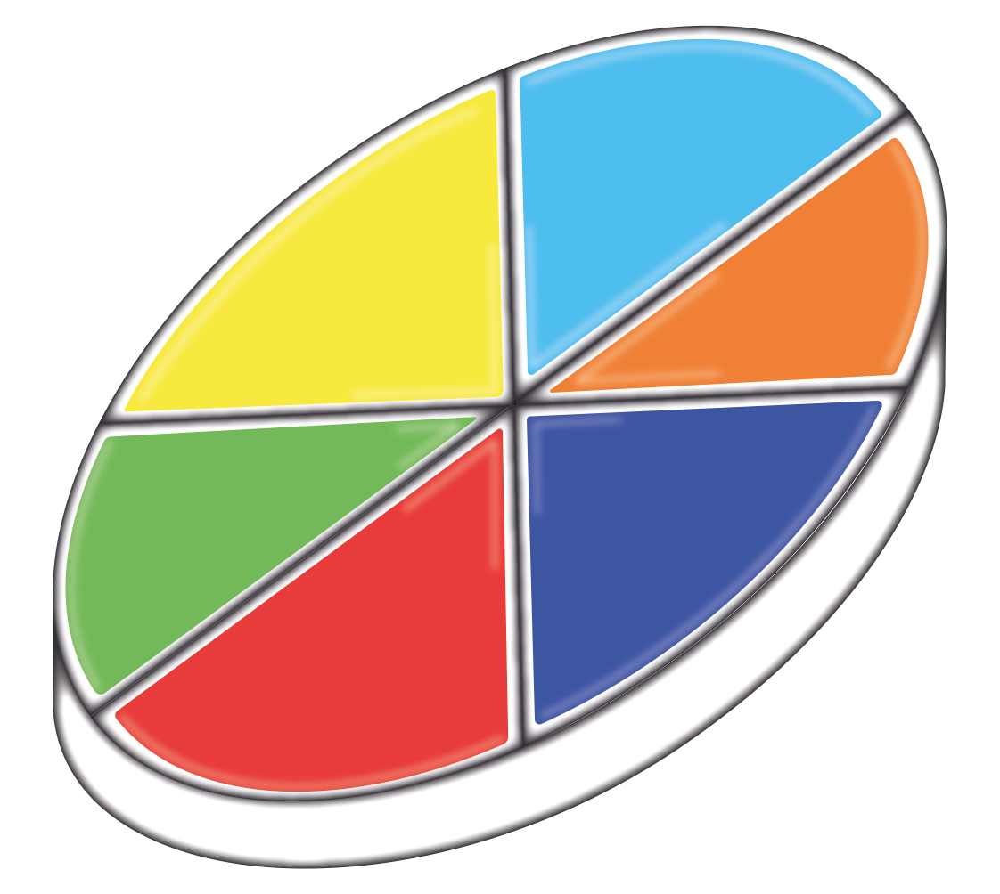
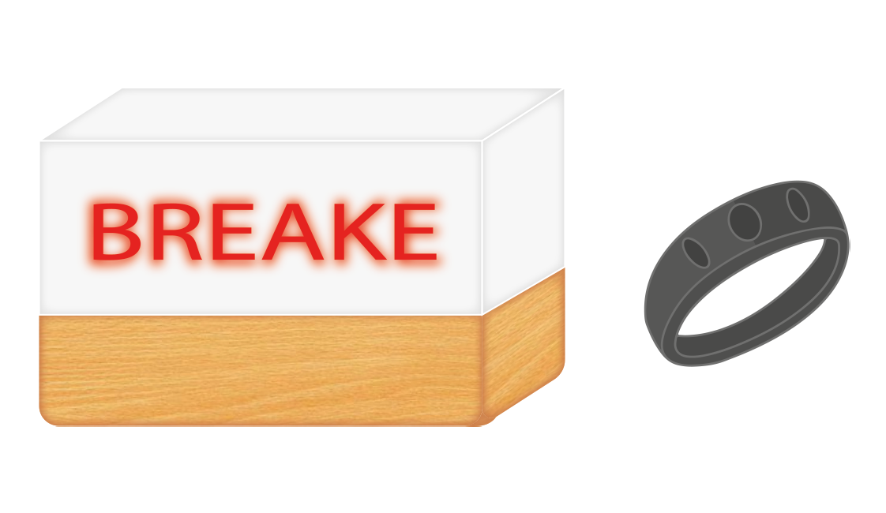
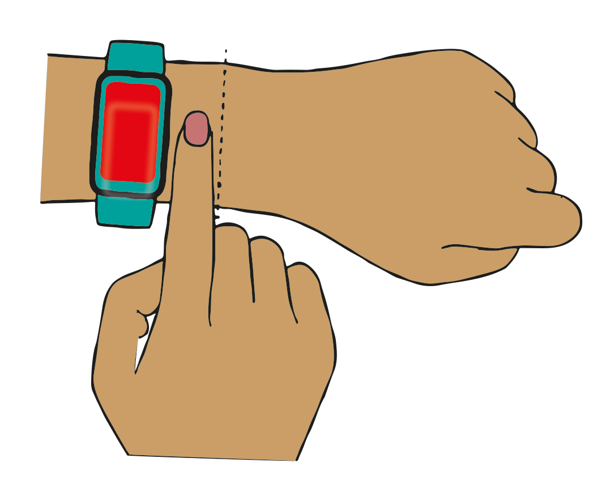

Kristell Alexandra Medina Aguilar
Arquitectura de Interiores.
Para nosotros es importante que tomes un break.
si quieres saber más de nosotros, solo tienes que ver la hora.
Presentamos nuestros bocetos de cada integrante
que luego juntaremos para nuestra creación final
Este es un dispositivo diseñado con el propósito de brindar apoyo a individuos que experimentan ansiedad y depresión.
Este dispositivo incorpora un altavoz, conectividad Bluetooth y seis botones de colores, cada uno con una función específica. Por ejemplo, el botón azul se encarga de inducir la relajación a través de ejercicios de respiración, el botón naranja ofrece recomendaciones de alimentos para mejorar el estado de ánimo, el botón celeste proporciona ejercicios físicos, estiramientos o yoga, el botón amarillo presenta una lista de actividades simples para aumentar los niveles de dopamina y serotonina, el botón verde facilita conversaciones, reproducción de canciones favoritas, mensajes de seres queridos o consejos aleatorios, mientras que el botón rojo permite llamar o enviar una señal de alerta a una persona de confianza.
Diseñadora:Kristell Medina
Para los estudiantes y personas que hacen home office, este reloj que no solo les dará la hora si no también los alertará para que tomen un descanso.
Cuando se esté trabajando frente al computador, la persona tendrá que colocarse el accesorio que medirá su ritmo cardiaco y cuando este se encuentre elevado por los sintomas de estrés, el accesorio enviará una señal al reloj de mesa donde inmediatamente se emitirá una luz roja con la palabra "break" indicando que se debe tomar una pausa a la actividad que se esté realizando ya sea estudiando o trabajando.
Diseñadora: Tatiana Cabezas.
Esta gorra es para niños divergentes que les ayudarán a comunicar sus estados de animo y que las personas a su alrededor entiendan y sepan como tratarlos.
Esta gorra de tela tendrá unas luces que se prenderán del color de su preferencia tendra unos
botones con los que podrá cambiar el color y cada color transmitirá una emoción.
Amarillo: Alegráa
Azul: Tristeza
Rojo: Enojo
Verde: Desagrado
Morado: Miedo
Diseñadora: Sofia Huaman
Un accesorio para que los padres se sientan tranquilos de salir con sus hijos y que sus pequeños no se vayan a perder.
Esta pulsera solo podrá ser retirada de la muñeca del niño con el sensor que tendrá la pulsera del padre. La pulsera del niño contará con una aplicación para el celular donde podrá configurar la distancia que quiere que se aleje el niño y si el niño sobrepasa la distancia configurada, la pulsera emitirá una alarma y se prenderá una luz roja, también contará con la ubicación del niño y a cuantos metros se encuentra.
Diseñadora:Sofia Huaman.
Descansar no es abandonar, es prepararse para regresar más fuerte y enfocado.